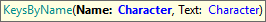

GXtest UI Commands - Keystroke
Keystroke commands are used to send single Keys to some UI control, typically to force running some JS events on the webpage after pressing a special key.
See the list of special characters to use.
Note:
While sending a key {Tab} is a common practice for some automated tests we recommend to use it only when there is no other alternative (like clicking or typing somewhere else to lost focus, etc), since browser implementation of this could lead to flaky results. Also, while this function enables us to send characters to the UI, it is not intended to be used for typing. For typing over text fields use type commands instead.
SendKeys
This command allows you to send keys to the browser and controls.
There are 3 implementations of this command:
Sends keys to a specific control
Sends keys to a specific control inside a grid
Sends keys to the currently focused element or the page itself if there is none.
Parameters:
- ControlName: name of the control to send the Keys
- Row: row number to locate the element to send the keys to.
- Keys: keys to send. It's recommended to use the "Keys" domain to send special keys like ENTER, TAB, ESC, etc..
Can be used to confirm a form (Keys.Enter), to move over combo box options (Keys.DOWN and Keys.UP), navigate web elements (Keys.TAB), etc.
Examples:
&driver.SendKeys("optionsCtrl", Keys.DOWN)
&driver.SendKeys(Keys.Enter)
&driver.SendKeys("someControl", 1, Keys.Enter)
&driver.SendKeys(Keys.TAB)
KeysByID

Sends keys using the ID attribute.
Parameters:
- ID: the HTML element ID to send the key.
- Text: Character(s) to send.
Example of use:
&driver.KeysByID("vSUG1", "{BACKSPACE}")
KeysByName

Sends keys using the 'name' attribute.
Parameters:
- Name: the name attribute of the element to send the key.
- Text: Character(s) to send.
Example of use:
&driver.KeysByName("vSUG1", "{TAB}")
KeysByCSS

Sends keys using a CSS selector.
Parameters:
- CSS: the CSS locator of the element to send the key.
- Text: Character(s) to send.
Example of use:
&driver.KeysByCss("#vSUG1", "u")
KeysByXPath

Sends keys using an XPath selector.
Parameters:
- XPath: the XPath of the element to send the key.
- Text: Character(s) to send.
Example of use:
&driver.KeysByXpath("//input[@id='vSUG2']", "{RETURN}")
| Backlinks | |
| GXtest UI Commands - Keystroke (GeneXus 17 upgrade 0) | GXtest UI Test for Web - Supported Commands |
| Toc:GXtest v4 |